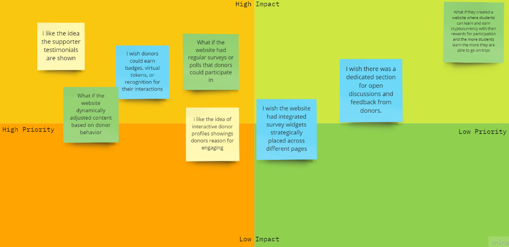
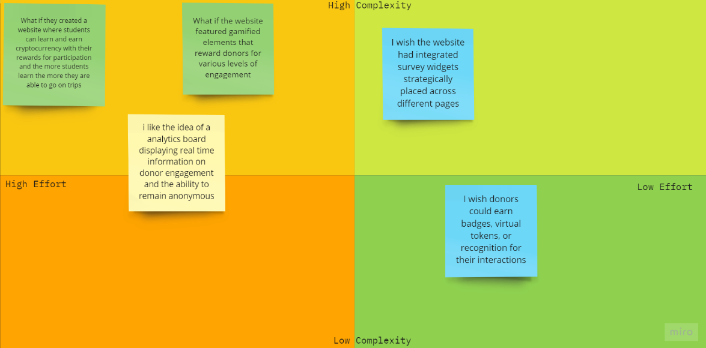

Design Process
Research
-
Why we chose M7 Education?
Impactful Mission: M7 Education's goal of funding school trips makes a real difference in students' lives.
User-Focused: A redesign can create a better experience for donors, educators, and students.
Boosting Support: Improved design can increase engagement and donations for the organization.
Visibility and Growth: A fresh design can attract more people, helping M7 Education grow. -
Background of M7 Education
M7 Education was established with a clear vision of promoting educational equity and supporting students in state schools facing financial challenges. Understanding that schools with high pupil premium (above 30%) often struggle to provide enriching educational experiences, M7 Education aims to bridge this gap by funding impactful programs that benefit both students and teachers. Through financial support for educational experiences, the non-profit seeks to empower students to unlock their potential and equip teachers with the tools to create a transformative learning environment, ultimately contributing to a more equitable educational landscape.
-
Proto-Persona
Name: Bob Smith
Age: 35
Occupation: School Teacher
Goals:
Make meaningful contributions to support educational equality and create a positive impact on students' lives, despite time constraints.
Ensure transparency and accountability in the organisations he supports, particularly regarding the utilisation of his contributions.
Engage in opportunities that are convenient and accessible, allowing him to participate from anywhere at his own pace.
Be part of initiatives that empower students, especially those from underprivileged backgrounds, to unlock their full potential and pursue their dreams.
Challenge:
Limited availability due to demanding job and family responsibilities.
Difficulty engaging actively in on-the-ground efforts due to time constraints.
Balancing personal commitments with his passion for social impact and education equity.
-
Affinity Diagram
-
Affinity Diagram Groups
Group 1: Motivation and Website Influence
Interviewees across different roles, including teachers, parents, students, and community advocates, express a strong motivation to engage with non-profit organizations due to their commitment to educational opportunities. The website's role is pivotal in shaping their decision to support and engage. A user-friendly website that clearly communicates the organization's mission, impact, and funding application process significantly influences their motivation to contribute.
Group 2: Website Engagement Frequency
The frequency of visiting non-profit websites varies among interviewees, with some visiting fairly frequently and others occasionally. The need to stay informed about funding opportunities and trip details drives their website visits. Different roles have distinct reasons for visiting, such as planning school trips, exploring partnership opportunities, or suggesting new ideas.
Group 3: Information Value and Alignment
Interviewees emphasize the value of comprehensive and clear information on non-profit websites. They find it essential for websites to align with their interests and needs, whether it's providing educational details for teachers, aligning trips with children's interests for parents, or showcasing relevance to school curriculum for students. Effective communication of alignment significantly influences their support decisions.Group 4: Positive User Experience
A positive user experience on non-profit websites has a profound impact on interviewees' engagement. Clear, step-by-step processes for applications and interactive features, such as proposing new trip ideas, contribute to their positive impressions. Such experiences enhance their confidence and trust in the organization, leading to continued participation and support.
Group 5: Information Accessibility Challenges
Challenges in accessing information on non-profit websites are identified by interviewees. Overly complex application processes, scattered information, cluttered layouts, and lack of mobile-friendliness lead to frustration and discouragement. These challenges hinder their engagement and highlight the importance of user-friendly website design.
Group 6: Enhancing Website Features
Enhanced website features, such as personalized dashboards, trip calendars, funding calculators, and collaboration portals, are highly valued by interviewees. These features streamline the process of finding and participating in educational opportunities, fostering greater interaction, and facilitating effective engagement with the organization's mission.Group 7: Transparency and Effective Communication
Transparency and effective communication are fundamental for building trust and connection with non-profit organizations. Interviewees across roles emphasize the importance of clear information about funding allocation, selection processes, and regular updates on funded trips. Transparent communication strengthens their commitment and motivates ongoing support.
Group 8: Impact and Success Stories
Interviewees expect detailed and concrete impact reports that showcase the positive outcomes of funded trips. Stories, photos, and testimonials from beneficiaries contribute to trust-building. The ability to witness the organization's impact and success stories enhances their belief in the organization's mission and encourages continued involvement.
Group 9: Personalized Content
Personalized content is seen as a potential improvement for non-profit websites. Interviewees express a desire for tailored recommendations based on individual needs, such as grade levels, interests, and collaboration types. Personalization has the potential to enhance engagement by delivering relevant information and opportunities.
Group 10: Website Navigation and Layout
To retain engagement and support, non-profit websites should focus on featuring success stories, interactive elements, and consistent communication. Interviewees suggest strategies like showcasing testimonials, updating with inspiring stories, and offering practical resources. Regular updates and meaningful engagement efforts foster a sense of community and motivate ongoing participation.
Strategy
-
User Insight
As you explore non-profit organizations like M7 Education, which offer funding for educational school trips, you're driven by the desire to ensure that children have meaningful learning opportunities. However, the website's lack of clear and personalized information hampers your ability to engage and contribute effectively. Data gained from the interviews reveals that frustration stems from the website's generic approach. Addressing this by creating tailored content and recommendations aligned with children's interests and grade levels can empower parents, fostering a stronger connection and motivating their active support.
-
User Persona
[Explain your strategic approach]
-
Problem Statement
Community advocates like Emily, who are dedicated to promoting equal education opportunities and collaborating with non-profit organizations, face challenges in effectively engaging and supporting initiatives due to a lack of transparent information, limited collaboration resources, and inconsistent updates on non-profit websites. Without tailored tools and resources, community advocates are hindered in their efforts to make a meaningful impact and contribute to positive change in education.
-
Competitor Analysis
Structured Evaluation: The check points provide a structured framework for assessing competitors' strengths, weaknesses, and strategies across various critical aspects. This ensures that your analysis covers a comprehensive range of factors, leaving no crucial area unexplored.
Informed Decision-Making: By systematically evaluating each aspect, you gather valuable insights that help in making informed decisions during the redesign process. These insights allow you to identify best practices, potential areas for improvement, and innovative ideas that can be applied to M7 Education's redesign.
Identifying Opportunities: Through the analysis, you can uncover opportunities for M7 Education to stand out and differentiate itself from competitors. This could involve implementing unique engagement strategies, refining the donation process, or enhancing transparency, all of which contribute to a more compelling user experience.
User-Centric Approach: The checkpoints are designed to focus on user experiences, engagement, and satisfaction. By analyzing competitors' user-centric strategies, you can better tailor M7 Education's redesign to meet the needs and expectations of its target audience.
Alignment with Goals: The check points ensure that your analysis aligns with the specific goals of the redesign project. This alignment keeps the analysis relevant and directly contributes to creating a redesigned platform that aligns with M7 Education's mission and objectives.
-
Feature Prioritization - Impact/Priority
 -
Feature Prioritization - Complexity/Effort

Design
-
User Scenario
-
Storyboard
-
User Flow

-
Style Guide
Prototype and Test
-
HomePage
-
Donation Component
-
Desktop Design
-
Prototype and Test
[Ask for Prototype Link]
-
Usability Testing - M7 Education
During our initial walkthrough of the website we came across a number of issues that we felt needed to be addressed in the redesign.
5 usability tests were done, looking at the areas in which we felt were going to be most used when using the website for example:
- Finding the purpose of the organisation
- Making a donation
- Finding the most recent news
- Finding the correct contact information.
-
Usability Testing M7 Education Findings
Task 1 - Figuring Out What the Organisation Does:
- Majority of users struggled to quickly grasp the organisation's purpose from the homepage.
- Users commonly relied on the "About" page to understand the mission.
- Adding a brief tagline or description on the homepage was suggested for immediate clarity.
Task 2 - Making a Donation:
- Most users easily located the "Donate" button on the homepage.
- The donation process was perceived as lengthy and overwhelming by several users.
- Suggestions included providing a "Quick Donate" option and simplifying the process steps.
Task 3 - Finding the Most Recent Story/News:
- Users often identified the "Blog" section, though some questioned the label's connection to news.
- Some users were unsure about the purpose of a bottom section redirecting to news.
- Renaming "Blog" to "News & Updates" and providing clearer redirection indicators were recommended.
Task 4 - Finding Contact Information:
- Users generally found the "Contact" section but encountered challenges with the presentation of contact details.
- Email addresses at the bottom of forms were often difficult to distinguish due to their appearance.
- Recommendations included using distinct colours, larger fonts, or altering the format for improved visibility.